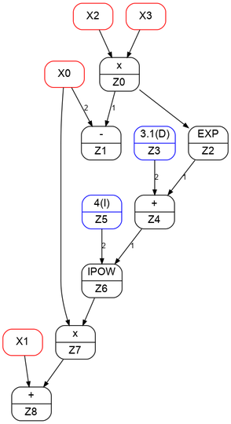
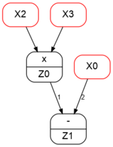
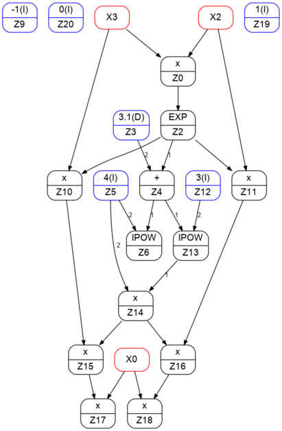
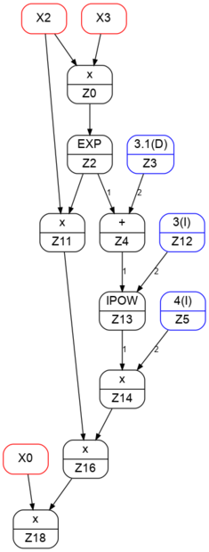
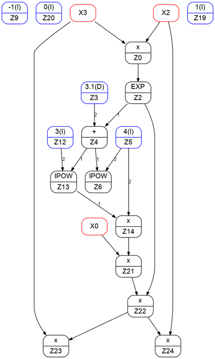
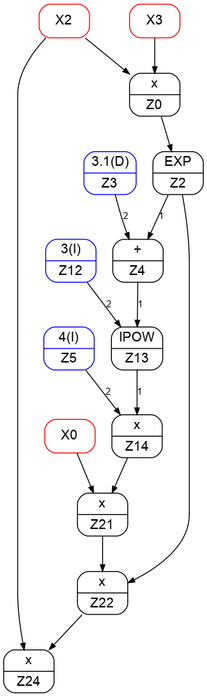
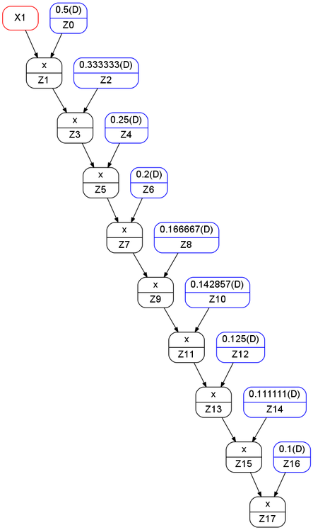

- Generated on for MC++ by
 1.15.0
1.15.0
|
MC++
|
Originally introduced by McCormick [McCormick, 1976] for the development of a convex/concave relaxation arithmetic, factorable functions cover an extremely inclusive class of functions which can be represented finitely on a computer by means of a code list or a computational graph involving atom operations. These are typically unary and binary operations within a library of atom operators, which can be based for example on the C-code library math.h. Besides convex/concave relaxations, factorable functions find applications in automatic differentiation (AD) [Naumann, 2009] as well as in interval analysis [Moore et al., 2009] and other set arithmetics [Chachuat et al., 2015].
Factorable functions can be represented using directed acyclic graphs (DAGs), whose nodes are subexpressions and whose directed edges are computational flows [Schichl & Neumaier, 2005]. A key advantage of DAGs is that they can handle common subexpressions shared by several functions effectively.
The classes mc::FFGraph, mc::FFBase, mc::FFVar and mc::FFOp defined in ffunc.hpp provide an implementation of DAGs for factorable functions in MC++. They enable their evaluation using any of the arithmetics supported by MC++, including interval ranges (mc::Interval), McCormick relaxations (mc::McCormick), Taylor and Chebyshev models (mc::TVar, mc::CVar, mc::SCVar), spectral bounds (mc::Specbnd), polyhedral relaxations (mc::PolVar), and interval superposition models (mc::ISVar). They also enable their symbolic manipulation, including automatic differentiation, sparse factorization, and quadratization; see:
For illustration, suppose we want to construct a DAG for the factorable function \({\bf f}:\mathbb{R}^4\to\mathbb{R}^2\) defined by
\begin{align*} {\bf f}(x_0,x_1,x_2,x_3) = \left(\begin{array}{c} x_2x_3-x_0\\ x_0(\exp(x_2x_3)+3.0)^4)+x_1\end{array}\right) \end{align*}
The constructions require the header file ffunc.hpp to be included:
An environment mc::FFGraph is first defined for recording the factorable function DAG. All four variables mc::FFVar participating in that function are then defined in the environment using the method mc::FFVar::set:
The two components of the factorable function can be defined next:
The last line displays the following information about the factorable function DAG:
DAG VARIABLES:
X0 => { Z1 Z7 }
X1 => { Z8 }
X2 => { Z0 }
X3 => { Z0 }
DAG INTERMEDIATES:
Z0 <= X2 x X3 => { Z1 Z2 }
Z1 <= Z0 - X0 => { }
Z2 <= EXP( Z0 ) => { Z4 }
Z4 <= Z2 + Z3 => { Z6 }
Z6 <= IPOW( Z4, Z5 ) => { Z7 }
Z7 <= X0 x Z6 => { Z8 }
Z8 <= X1 + Z7 => { }
Z5 <= 4(I) => { Z6 }
Z3 <= 3.1(D) => { Z4 }
Observe that 9 auxiliary variables, \(z_0,\ldots,z_8\), have been created in the DAG, which correspond to the various unary and binary operations in the factorable function expression, as well as the (integer or real) participating constants. Observe, in particular, that the common sub-expression \(x_2x_3\) is detected here; that is, the intermediate \(z_0\) is reused to obtain both subsequent auxiliary variables \(z_1\) and \(z_2\).
At this point, the member function mc::FFGraph::subgraph can be used to generate the subgraph of a DAG corresponding to a given subset of dependent variables. This function returns a list of const pointers mc::FFOp* to the operations participating in the subgraph in order of appearance, which can then be displayed using the member function mc::FFGraph::output:
Here, the first line generates and displays a subgraph of both components of \({\bf f}\), whereas the second line generates and displays a subgraph of the first component \(f_0\) only:
OPERATIONS IN SUBGRAPH F:
X2 <= VARIABLE
X3 <= VARIABLE
Z0 <= X2 x X3
X0 <= VARIABLE
Z1 <= Z0 - X0
X1 <= VARIABLE
Z2 <= EXP( Z0 )
Z3 <= 3.1(D)
Z4 <= Z2 + Z3
Z5 <= 4(I)
Z6 <= IPOW( Z4, Z5 )
Z7 <= X0 x Z6
Z8 <= X1 + Z7
DEPENDENTS IN SUBGRAPH F:
0: Z1
1: Z8
OPERATIONS IN SUBGRAPH F0:
X2 <= VARIABLE
X3 <= VARIABLE
Z0 <= X2 x X3
X0 <= VARIABLE
Z1 <= Z0 - X0
DEPENDENTS IN SUBGRAPH F0:
0: Z1
The obtained subgraphs can also be depicted using the (open source) graph plotting program DOT. The dot files F.dot and F1.dot can be generated for both subgraphs as follows [which requires the header file fstream.h]:
The graphs can be visualized, e.g., after generating SVG files using the command line as:
$ dot -Tpng -O F.dot; display F.dot.png
$ dot -Tpng -O F0.dot; display F0.dot.png

Figure: Graph for file F.dot | 
Figure: Graph for file F0.dot |
Derivatives of a factorable function in mc::FFGraph can be obtained with the methods mc::FFGraph::FAD and mc::FFGraph::BAD, which implement the forward and reverse mode of automatic differentiation (AD), respectively. mc::FFGraph implements these AD methods, but also has built-in capability to use the classes fadbad::F and fadbad::B as part of FADBAD++.
In the forward mode of AD, for instance, entries of the Jacobian matrix of the factorable function \(f\) considered in the previous section can be added to the DAG as follows:
The last line displays the following information about the DAG of the factorable function and its Jacobian:
DAG VARIABLES:
X0 => { Z1 Z7 Z17 Z18 }
X1 => { Z8 }
X2 => { Z0 Z10 }
X3 => { Z0 Z9 }
DAG INTERMEDIATES:
Z0 <= X2 * X3 => { Z1 Z2 }
Z1 <= Z0 - X0 => { }
Z2 <= EXP( Z0 ) => { Z4 Z9 Z10 }
Z4 <= Z2 + Z3 => { Z6 Z12 }
Z6 <= POW( Z4, Z5 ) => { Z7 }
Z7 <= X0 * Z6 => { Z8 }
Z8 <= X1 + Z7 => { }
Z9 <= X3 * Z2 => { Z15 }
Z10 <= X2 * Z2 => { Z16 }
Z12 <= POW( Z4, Z11 ) => { Z14 }
Z14 <= Z12 * Z13 => { Z15 Z16 }
Z15 <= Z9 * Z14 => { Z17 }
Z16 <= Z10 * Z14 => { Z18 }
Z17 <= X0 * Z15 => { }
Z18 <= X0 * Z16 => { }
Z11 <= 3(I) => { Z12 }
Z5 <= 4(I) => { Z6 }
Z19 <= -1(D) => { }
Z21 <= 0(D) => { }
Z20 <= 1(D) => { }
Z3 <= 3(D) => { Z4 }
Z13 <= 4(D) => { Z14 }
Observe that 13 extra auxiliary variables, \(z_9,\ldots,z_{21}\), have been created in the DAG after the application of forward AD. The function mc:FFGraph::FAD returns a const array, whose entries correspond to \(\frac{\partial f_i}{\partial x_j}\) of the Jacobian matrix of \(f\) in the DAG, ordered column-wise as \(\frac{\partial f_1}{\partial x_1},\ldots,\frac{\partial f_1}{\partial x_n},\frac{\partial f_2}{\partial x_1},\ldots,\frac{\partial f_2}{\partial x_n},\ldots\). To prevent memory leaks, this const array should be deleted before becoming out of scope.
As previously, subgraphs can be constructed for all or part of the derivatives, and dot file can be generated for these subgraphs too, e.g.:
The first subgraph created above corresponds to both components of the factorable function \(f\) as well as all eight component of its Jacobian matrix \(\frac{\partial {\bf f}}{\partial {\bf x}}\); the second subgraph is for the Jacobian element \(\frac{\partial f_1}{\partial x_3}\). The corresponding graphs are shown below.

Figure: Graph for file dFdX_FAD.dot | 
Figure: Graph for file dF1dX3_FAD.dot |
The backward (or adjoint) method of AD can be applied in a likewise manner using the method mc::FFGraph::BAD instead of mc::FFGRAPH::FAD, everything else being the same.
The corresponding graphs are shown below. Note that the reverse mode leads to a DAG of the Jacobian matrix with 10 operations (+,*,pow,exp) only, whereas the forward mode needs 12 operations.

Figure: Graph for file dFdX_BAD.dot | 
Figure: Graph for file dF1dX3_BAD.dot |
The class mc::FFGraph also supports sparse derivatives, both in forward and backward modes, as well as directional derivatives in forward mode.
Consider a dynamic system of the form
\begin{align*} \dot{\bf x}(t,{\bf p}) \;=\; {\bf f}({\bf x}(t,{\bf p}),{\bf p})\,, \end{align*}
where \({\bf x} \in \mathbb{R}^{n_x}\) denotes the state variables, and \({\bf p} \in \mathbb{R}^{n_p}\) a set of (time-invariant) parameters. Assuming that the right-hand side function \({\bf f}\) is sufficiently often continuously differentiable on \(\mathbb{R}^{n_x}\times\mathbb{R}^{n_p}\), a \(q\)th-order Taylor expansion in time of the ODE solutions \(x(\cdot,{\bf p})\) at a given time \(t\) reads:
\begin{align*}{\bf x}(t+h,{\bf p}) \;=\; \sum_{i=0}^q h^i {\boldsymbol\phi}_i({\bf x}(t,{\bf p})) + \cal{O}(h^{s+1}) \,, \end{align*}
where \({\boldsymbol\phi}_0,\ldots,{\boldsymbol\phi}_q\) denote the Taylor coefficients of the solution, defined recursively as
\begin{align*}{\boldsymbol\phi}_0({\bf x},{\bf p}) \;:=\; {\bf x} \qquad \text{and} \qquad {\boldsymbol\phi}_i({\bf x},{\bf p}) \;:=\; \frac{1}{i} \frac{\partial{\boldsymbol\phi}_{i-1}}{\partial {\bf x}}({\bf x},{\bf p})\, {\bf f}({\bf x},{\bf p}) \quad\text{for $i\geq 1$} \,. \end{align*}
DAGs for these Taylor coefficients can be generated using the method mc::FFGraph::TAD, which relies upon the class fadbad::T of FADBAD++.
As a simple illustrative example, consider the scalar linear ODE \(\dot{x}(t) = x(t)\), whose solutions are given by \(x(t+h) = \exp(h)x(t)\). Accordingly, the desired Taylor coefficients are:
\begin{align*}\phi_i({\bf x}) \;:=\; \frac{1}{i!}x \quad\text{for all $i\geq 0$} \,. \end{align*}
A DAG of these Taylor coefficients can be generated by mc::FFGraph as follows:
The resulting DAG of the Taylor coefficients up to order 10 is shown below.
DAG VARIABLES:
X0 => { }
X1 => { Z1 }
DAG INTERMEDIATES:
Z1 <= X1 * Z0 => { Z3 }
Z3 <= Z1 * Z2 => { Z5 }
Z5 <= Z3 * Z4 => { Z7 }
Z7 <= Z5 * Z6 => { Z9 }
Z9 <= Z7 * Z8 => { Z11 }
Z11 <= Z9 * Z10 => { Z13 }
Z13 <= Z11 * Z12 => { Z15 }
Z15 <= Z13 * Z14 => { Z17 }
Z17 <= Z15 * Z16 => { }
Z16 <= 0.1(D) => { Z17 }
Z14 <= 0.111111(D) => { Z15 }
Z12 <= 0.125(D) => { Z13 }
Z10 <= 0.142857(D) => { Z11 }
Z8 <= 0.166667(D) => { Z9 }
Z6 <= 0.2(D) => { Z7 }
Z4 <= 0.25(D) => { Z5 }
Z2 <= 0.333333(D) => { Z3 }
Z0 <= 0.5(D) => { Z1 }
OPERATIONS IN SUBGRAPH F_TAD:
X1 <= VARIABLE
Z0 <= 0.5(D)
Z1 <= X1 * Z0
Z2 <= 0.333333(D)
Z3 <= Z1 * Z2
Z4 <= 0.25(D)
Z5 <= Z3 * Z4
Z6 <= 0.2(D)
Z7 <= Z5 * Z6
Z8 <= 0.166667(D)
Z9 <= Z7 * Z8
Z10 <= 0.142857(D)
Z11 <= Z9 * Z10
Z12 <= 0.125(D)
Z13 <= Z11 * Z12
Z14 <= 0.111111(D)
Z15 <= Z13 * Z14
Z16 <= 0.1(D)
Z17 <= Z15 * Z16
DEPENDENTS IN SUBGRAPH F_TAD:
0: X1
1: X1
2: Z1
3: Z3
4: Z5
5: Z7
6: Z9
7: Z11
8: Z13
9: Z15
10: Z17
| 
Figure: Graph for file F_TAD.dot |
In turn, the resulting DAG of Taylor coefficients may be differentiated using mc::FFGraph::FAD or mc::FFGraph::BAD, or evaluated in any compatible arithmetic as explained next.
Having created the DAG of a factorable function or its derivatives, one can evaluate these functions in any arithmetic implemented in MC++ using the method mc::FFGraph::eval.
Coming back to our initial example, suppose that we want to compute interval bounds on the first-order derivatives of the factorable function
\begin{align*} {\bf f} = \left(\begin{array}{c} x_2x_3-x_0\\ x_0(\exp(x_2x_3)+3.0)^4)+x_1\end{array}\right) \end{align*}
in the direction \((0,1,1,0)\), with \(x_0\in[0,0.5]\), \(x_1\in[1,2]\), \(x_2\in[-1,-0.8]\), and \(x_3\in[0.5,1]\).
For simplicity, the default interval type mc::Interval of MC++ is used here:
A DAG of the directional derivatives of \(f\) is constructed first:
In a second step, the DAG of directional derivatives is evaluated in interval arithmetic as follows:
The DAG evaluation can be carried out in sparse Chebyshev model arithmetic likewise:
Note that for repeated function evaluations, it is recommended to pass a pre-sized working array and a subgraph of the function to mc::FFGraph::eval for efficiency. These evaluations produce the following results:
dF(0)dX·D = [ 5.00000e-01 : 1.00000e+00 ]
dF(1)dX·D = [ 1.00000e+00 : 6.72863e+01 ]
dF(0)dX·D =
7.5000000e-01 0 1
2.5000000e-01 1 T1[X3]
R = [ 0.0000000e+00, 0.0000000e+00]
B = [ 5.0000000e-01, 1.0000000e+00]
dF(1)dX·D =
1.7166062e+01 0 1
1.6166062e+01 1 T1[X0]
1.7305014e+00 1 T1[X2]
3.4528311e-01 1 T1[X3]
1.7305014e+00 2 T1[X0]·T1[X2]
3.4528311e-01 2 T1[X0]·T1[X3]
5.6453307e-02 2 T2[X2]
5.0915026e-01 2 T1[X2]·T1[X3]
-3.9506502e-01 2 T2[X3]
5.6453307e-02 3 T1[X0]·T2[X2]
5.0915026e-01 3 T1[X0]·T1[X2]·T1[X3]
-3.9506502e-01 3 T1[X0]·T2[X3]
1.5084111e-03 3 T3[X2]
3.0422535e-02 3 T2[X2]·T1[X3]
-4.9916695e-02 3 T1[X2]·T2[X3]
4.7740483e-02 3 T3[X3]
R = [-1.8750872e-01, 1.8750872e-01]
B = [-5.2770965e+00, 3.9414566e+01]
Backward propagation is also possible through the DAG, e.g. for contraint propagation. Assuming that interval bounds are known for the directional derivatives, we want to tighten the bounds on the independent variables through reverse DAG propagation:
This evaluation produces the following results:
DAG interval evaluation w/ 4 forward/backward passes:
X(0) = [ 9.47264e-03 : 1.03696e-01 ]
X(1) = [ 1.00000e+00 : 2.00000e+00 ]
X(2) = [ -1.00000e+00 : -8.00000e-01 ]
X(3) = [ 6.00000e-01 : 9.00000e-01 ]
dF(0)dX·D = [ 6.00000e-01 : 9.00000e-01 ]
dF(1)dX·D = [ 2.00000e+00 : 5.00000e+00 ]
In practice, it is paramount to use reverse propagation of verified types; that is, types that account for round-off errors. Otherwise, the behavior could be unreliable and unpredictable; e.g., a feasible set of constraints might be declared infeasible.
For illustration, suppose we want to construct a DAG for the factorable function \(g:\mathbb{R}^3\to\mathbb{R}\) defined by
\begin{align*} g({\bf x}) = \left\|{\bf x}\right\|_2 \end{align*}
Although \(\left\|\cdot\right\|_2\) is not a default operation in mc::FFOp, we may define this operation externally and pass it as a template argument to the DAG class mc::FFGraph.
A new external operation mc::FFnorm2 is first derived from the base class of mc::FFOp as follows:
Notice that the identifier passed to mc::FFOp in the constructor of mc::FFnorm2 must be unique to a given external function, starting from the value mc::FFOp::EXTERN. Insertion of this external operation in the DAG of a function is via the mc::FFnorm2::operator() overload. The mc::FFnorm2::eval overloads can be specialized to particular set arithmetics in MC++. Finally, mc::FFnorm2::name and mc::FFnorm2::commutative are used to set, respectively, the name of the external operation and whether the operation is commutative.
Then, a templated environment mc::FFGraph<FFnorm2> is defined for recording the DAG, and the three participating variables are defined using mc::FFVar::set as previously.
After declaring the external operation, we may use it to define the DAG of our function:
The last line displays the resulting DAG:
DAG VARIABLES:
X0 => { Z0 }
X1 => { Z0 }
X2 => { Z0 }
DAG INTERMEDIATES:
Z0 <= NORM2( X0, X1, X2 ) => { }
Naturally, like with any other DAG, we may evaluate our function in any arithmetic:
This evaluation produces the following result:
Z0 = [ 1.28062e+00 : 2.29129e+00 ]
Errors are managed based on the exception handling mechanism of the C++ language. Each time an error is encountered, an instance of the class mc::FFBase::Exceptions is thrown, which contains the type of error. It is the user's responsibility to test whether an exception was thrown during the creation/manipulation of a DAG, and then make the appropriate changes. Additional exceptions may be sent by the template argument class in propagating a given arithmetic through the DAG. Should an exception be thrown and not caught by the calling program, the execution will abort.